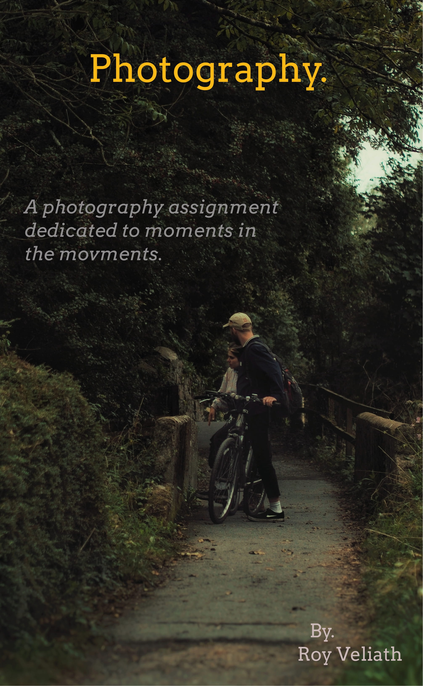

My Work


Hi there,
Disciplined, organised professional with 4+ years of experience in object-oriented analysis
and ux design experience with exceptional record overseeing all the facets of software
development life cycle.
Currently pursuing a course in Experience and Interaction design in Ireland.
My journey is to upgrade my knowledge and gain a deep knowledge in understanding user perspective that is going to help me bridge business
to customer needs in a ethical and efficient way possible.
Skills
Experience
Education
Back-end development entails working on server-side software, which is concerned with everything that cannot be seen on a website.
I ensure that the website functions properly by concentrating on databases, back-end logic, application programming interfaces (APIs),
architecture, and servers.
Finally, I employ code that allows browsers to communicate with one another.
- Java
- Spring Boot
- RestfulAPI
- Database like SQL and no-SQL
User experience (UX) design is the process design teams use to create products that provide meaningful
and relevant experiences to users.
I can design an experience that includes not only making the software easy to use but also
designing the other experiences related to the product.
Most importantly, designs that is concerned with delivering
solutions that address pain points and needs of the user.
- Figma
- Adobe photoshop
- Miro
- Azure
UX and UI share the same end goal—to provide a positive experience
for the user—but UI Design comprises an entirely separate leg of the journey.
I use UI to design interaction with a product for the user
and use things like patterns, spacing, and color to guide the user.
I use this empathy to design visual, interactive elements that respond in a way that feels natural to the user.
- Visual Studio
- Html
- Css
- JavaScript
Copyright @ royveliath, made with portfolio website